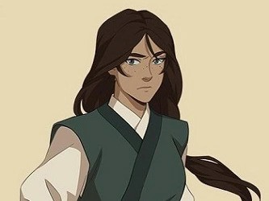
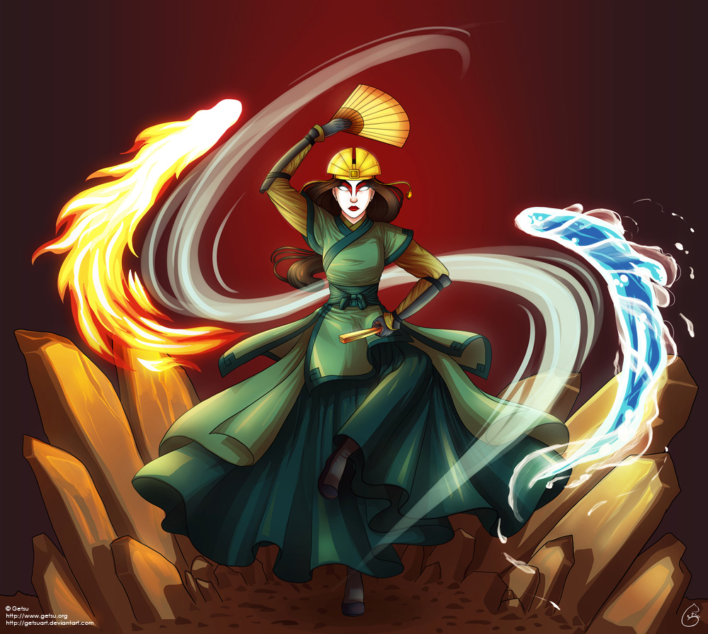
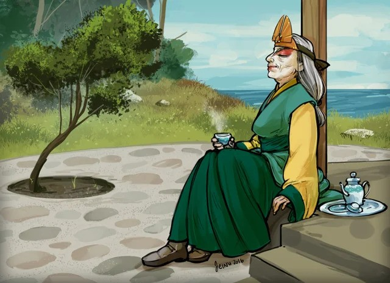

Gyermekkora

Kyoshi nehéz körülmények között született két bűnöző, Jesa, egy renegát légidomár apáca, és Hark, egy földidomár tolvaj gyermekeként. A szülei vezette bűnbanda, a Flying Opera Company, a Föld Királyság egyik legismertebb bűnhálózata volt. Szülei később hátrahagyták őt Yokoya kikötőjében, ahol a helyiek kitaszították és magára hagyták. Kyoshi éhezés és kirekesztettség közepette nevelkedett, mígnem Kelsang, egy légidomár szerzetes megmentette, és gondoskodott róla.
Tizenhat éves koráig senki nem ismerte el Avatárként, mivel barátját, Yunt tartották annak. Az igazság kiderülése után Kyoshi élete káoszba borult: Yun egy szörnyű szellem áldozata lett, Kelsangot pedig Jianzhu, Yun mestere és a Föld Királyság vezetője meggyilkolta. Ezek az események mély sebeket hagytak benne, és arra kényszerítették, hogy elmeneküljön Rangival, legjobb barátjával és későbbi szerelmével.
Bűnbandából, hős avatárrá

Menekülése során Kyoshi a szülei egykori bűnbandájához, a Repülő Opera Társasághoz csatlakozott. Itt olyan emberekkel találkozott, akik hűségükkel és tanításaikkal segítették őt, többek között Lao Ge, egy híres bérgyilkos, aki a spiritualitás és az "örök élet" titkaira tanította. A bandával utazva Kyoshi megtapasztalta a Föld Királyság bűnözői világát, és fejlesztette harcművészeti és hajlítási képességeit.
Ezek a tapasztalatok segítették abban, hogy megértse a világ igazságtalanságait és szembeszálljon azokkal. Egy sorsfordító pillanatban, mikor a Sárga Nyak Felkelés vezetőjét kellett legyőznie, Kyoshi belépett az Avatar Állapotba, és ezzel bizonyította valódi avatár létét.
Kyoshi életének legnagyobb eredményei közé tartoznak a béketeremtés és a világ stabilizálása. Ezek közül néhány:
Kyoshi-sziget létrehozása: Chin Hódító ellen védve otthonát, Kyoshi elválasztotta a félszigetet a szárazföldtől, és a szigetet a saját képére formálta. Ez a cselekedete nemcsak a Föld Királyságot, hanem egész világát befolyásolta.
Kyoshi Harcosok megalapítása: Miután látta, hogy a helyi nők védtelenek, harcművészetekre tanította őket. Ezek a harcosok később legendássá váltak és a sziget védelmezőivé lettek.
Politikai reformok: Kyoshi alkotmányos monarchiává alakította a Föld Királyságot, és jelentős reformokat vezetett be a legszegényebbek és legelesettebbek életének javítása érdekében.
Háborúk lezárása: Véget vetett a Sárga Nyak Felkelésnek és a Kamélia-Bazsarózsa Háborúnak, ezzel stabilitást hozva a világ számára.
Öröksége

Kyoshi 230 éves korában hunyt el, életének vége felé egyre elidegenedve társaitól. Halála után a Dai Li és a Föld Királyság politikai vezetése újra korrupcióba süllyedt, de öröksége – például a Kyoshi Harcosok, a szigete és reformjai – tovább éltek. Ő lett az egyik legnagyobb tiszteletnek örvendő Avatár, és nevét mind a mai napig világszerte emlékezik.
Kyoshi a világ békéjét több mint két évszázadon át fenntartotta, de tettei következményei generációkon átívelően formálták a világ sorsát, jó és rossz értelemben egyaránt. Öröksége az igazságosság és az eltökéltség példaképeként szolgál az utódai számára.